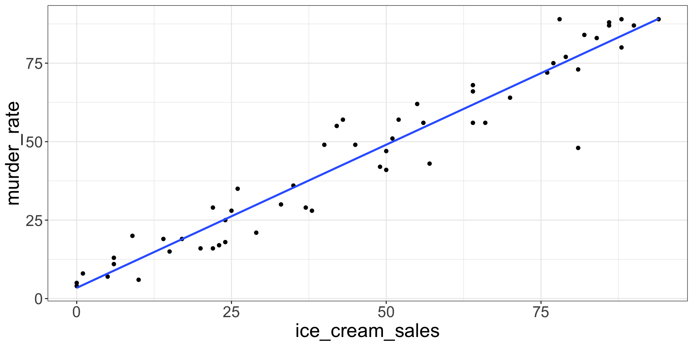
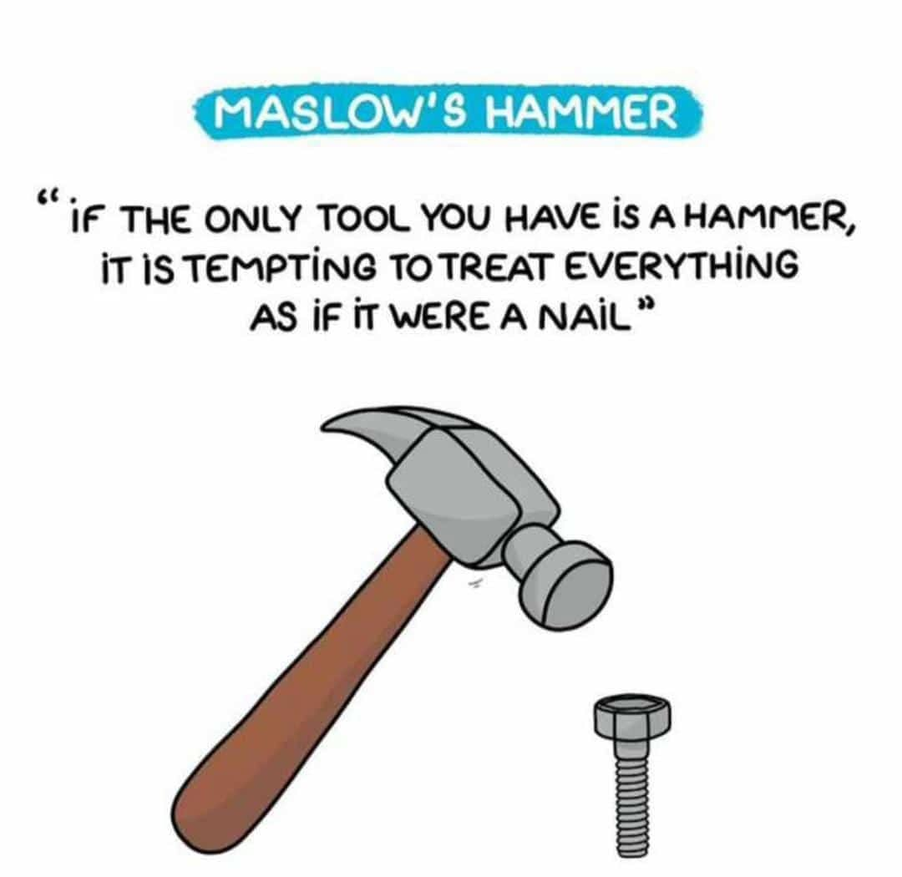
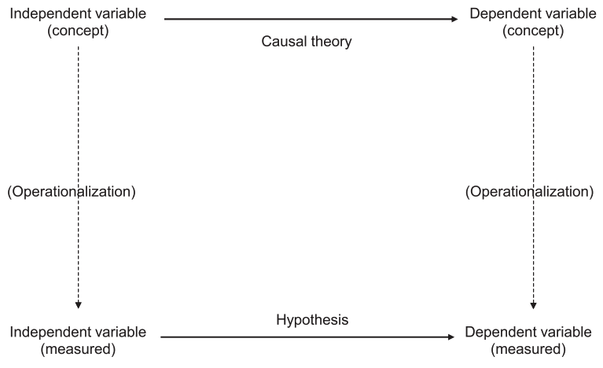
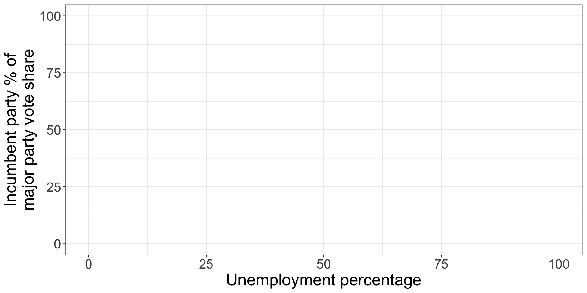

Variables, theories, and hypotheses: A conceptual deep dive
Week 4 Lecture 1
So far, we’ve mostly covered hammers

This week is about nails
(and by nails I mean theories)
Lawyers and scientists
- Both start from a particular point of view (my client is innocent; my theory is correct)
- But they move in opposite directions from there:
- Lawyers look for the evidence that is most likely to win them the case
- Scientists look for the evidence that is most likely to disprove their theory
- Theories are never proven, only supported
- Ruthless criticism is scientists’ love language 🥲
In this class, you are a scientist
- Your research proposal is due next Friday!
- You will be stating a research question, identifying independent and dependent variables, and formulating a hypothesis your study will test
- This week, we are covering how to do all of that
The scientific method
- Develop a theory
- General hypotheses
- Conduct empirical tests
- Evaluate hypotheses
- Evaluate the theory
We start with a theory
- A conjecture about the causes of some outcome of interest
- Tentative
- Generally causal
- About something interesting
- Consists of an independent variable, a dependent variable, and the nature of the relationship between them
Example: “Better economic performance causes greater support for incumbent politicians and parties.”
What makes a good theory?
Focus on causality
- Correlation is not causation! (Neither is covariation.)
- What does this actually mean though?
Don’t let data alone drive your theories
- Still on ice cream sales and homicide…
- Brain freezes cause murder??
- …probably not.
- Focusing on observable patterns over plausible mechanisms leads to silly theories.
Consider only empirical evidence
Two potential pitfalls here:
- Over-reliance on logic versus empirical investigation
- Humans don’t always do what they logically should do.
- Over-emphasis on normative versus positive statements
- Arguing about what ought to be if the world were just and fair is not our job.
Pursue both generality and parsimony
- Generality: theories should explain as broad a class of phenomena as possible
- Parsimony: theories should be as simple as possible
- Occam’s Razor: if two hypotheses explain the same phenomenon equally well, the one that requires fewer assumptions is more likely to be correct.
Let’s evaluate our theory
“Better economic performance causes greater support for incumbent politicians and parties.”
- Is it causal?
- Is there a plausible mechanism?
- Is it empirically testable?
- Is it unduly normative?
- Is it general?
- Is it parsimonious?
From theory to hypothesis

Kellstedt and Whitten
From theory to hypothesis
“Better economic performance causes greater support for incumbent politicians and parties.”
- To generate a hypothesis, ask:
- How might we operationalize each of these concepts?
- What is the expected direction of the relationship between our IV and DV as we have operationalized them?
Option 1

Option 2

Today’s activity
- Less coding, more ✨concepts✨
- Based on “Political Institutions and Voter Turnout in the Industrial Democracies” (Jackman 1987)
- A few key terms:
- Voter turnout
- Malapportionment
- Mandatory voting laws
Summing up
- Scientific research starts with a theory
- Really good theories are hard to come by
- Theories cannot be tested; only hypotheses can
- Doing so requires operationalization of key concepts into usable measures